終極小路
凌晨兩點鐘，發電機沒油了，電力瞬間消失，而帳篷裡的暖爐也燃燒完畢。
冷颼颼的夜裡，一切的東西都是冰的，拖鞋、棉被、枕頭還有我自己，有點擔心會不會就這麼一睡不醒了？
跑去行李區中翻出睡袋，今晚還是乖一點當草履蟲比較安心。
早上睡到九點半，睡眼惺忪的爬起來，外頭已經是豔陽高照的大熱天，夜裡很冷、白天則很熱，湖區的溫差日夜居然這麼樣的巨大。
探出頭到帳棚外面，就被媽媽叫過去一起吃早餐，大家才正要開動而已，看來我還不算睡的太晚。
早餐吃得一樣是饃饃切成三角形，配上現擠好、加熱過的牛奶，饃饃還可以沾著媽媽自己做的酥油一起吃，味道很香濃。
一整個早上都是吃奶製品，好加在我的腸胃撐的住，熱牛奶喝了三大碗，摸摸肚子表示吃飽了。
吃飽後就收拾行李準備今天的行程吧，從賽里木湖畔到中國的最後一站，霍爾果斯，不到九十公里的距離，而且大多都是下坡路段。
騎起來是非常輕鬆自在的，只要小心不要衝到山溝裡面就好。
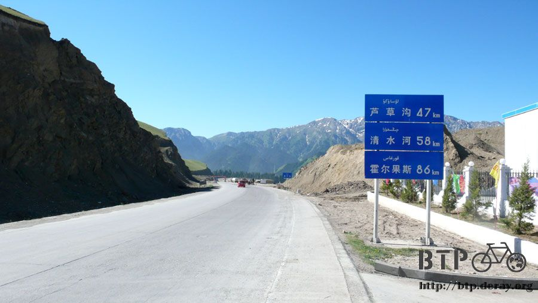
雖然有點傷感情，但就算和阿展瑪一家人相處的這麼愉快，出發前還是要用付金錢的方式來感謝他們。
昨天的抓飯是十元，住一晚帳篷三十元，爐火是媽媽加給我的，本來我說如果要錢的話那就不用加，但是媽媽看我冷得發抖很可憐。
昨天夜裡的晚餐和今天的牛奶早餐，合計只收十元，所以只跟我收了五十元。
阿展瑪躺在草地上用牛仔帽子蓋著頭睡覺，走過去騷他癢把他叫起來，我要走啦～昨天騎馬得給你多少錢？
總計騎了四個小時的白眉涼，本來應該要收一百二十元，但是阿展瑪只跟我收了三十元。
臨走前媽媽還拿了一些饃饃，要我路上帶著可以吃....T_T
謝謝你們這麼關心一個陌生的旅行者 ，雖然目前在離家很遠的地方，可是這裡讓我很有家的溫暖感受。
用哈薩克文跟大家說謝謝還有再見，踏上小多啟程吧。
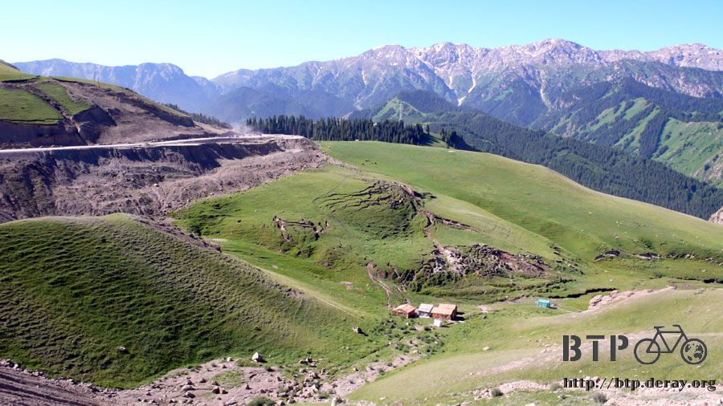
一離開湖區，路面的情況不是很好，可是下坡超級陡峭，按著煞車的手都酸得發疼。


過了路不好的這一段，就是快意享受的時刻了，一路狂飆了將近四十公里的下坡路，看到羊群過馬路還得急煞才不會猛然撞上去。
這些羊真的是太酷了，幾百隻佔據住所有的馬路車道，沒有車輛可以走得過去，大家都要停下來等著羊群穿越。
就算猛按喇叭也沒有用，因為實在太多隻羊了，騎在馬上的牧民則好像事不關己一樣，笑笑的任著交通打結，然後繼續牧著羊。
一開始是被羊群包圍住的油罐車，反正羊也不知道油罐車是什麼東西，照樣給它包起來。
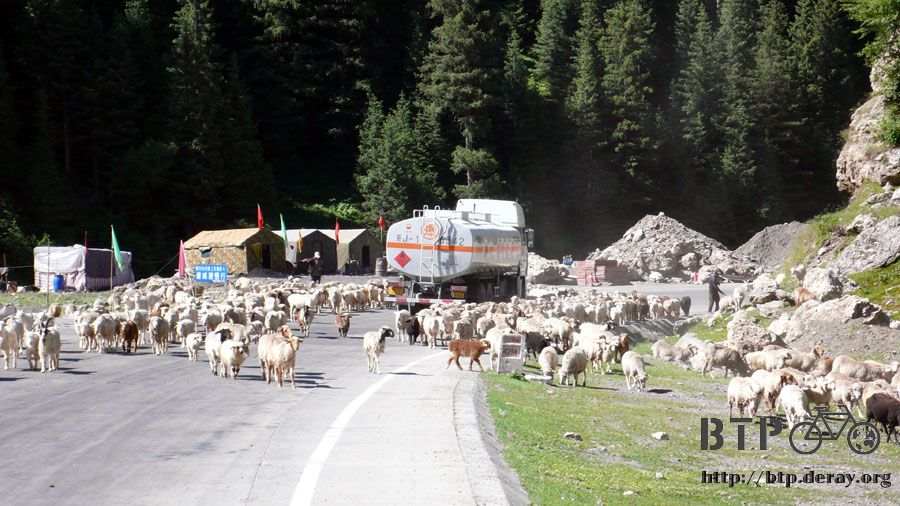
然後羊群朝著我走過來，坐在馬上面跟坐在單車上面看到這麼多羊，感覺真是不一樣，還好羊很乖不會攻擊我。

羊群從四面八方穿過我之後，就繼續包圍後面的車輛，這時候我才得以繼續騎車。
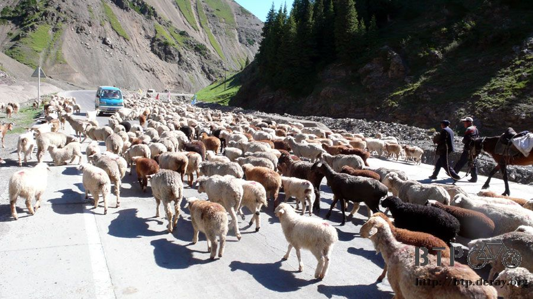
山區這一段的景色都是『果子溝』的範圍，這邊盛產蜂蜜、花粉等，風景真的很漂亮，原來在山溝中騎車就是這樣的感覺。
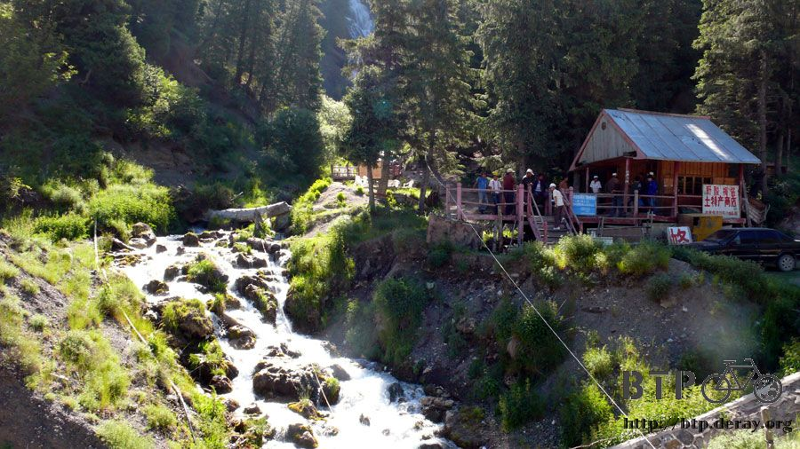
中午的時候就抵達第一個城市，蘆草溝，沿著馬路都是餐廳，大大的數字招牌，好像客人都是認數字挑餐廳一樣。

沒興趣在這樣餐廳林立的街道吃飯，越過這裡之後接著往十多公里以外的清水河騎。
離開山路，就變成直線平坦的馬路，不再那麼彎彎曲曲，可是依然是下坡路，一路繼續往清水河狂飆。
路旁種植的作物大大的更改，一口氣全部種的都是比人還要高的玉蜀黍，都還沒有長出東西，看起來有點像甘蔗。

雖然我連小雞和小鴨都分不清楚，可是這個我有把握應該是玉蜀黍沒有錯....吧？

清水河，不單單是一個城鎮的名字，它真的同時也是一條河流，可是河水稀少，水也不清澈，因為上游施工的關係，水質混濁得可以。

用泥巴蓋的農地牆壁，但是這邊的作物長的反而沒有一整片田那樣的好，又因為牆壁是用泥巴蓋的，所以上面反而長了很多草。
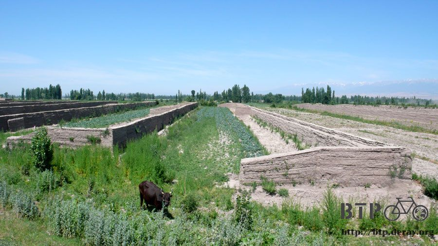
進入清水河的市區之後，我憑自己的第六感找一間看起來就沒什麼客人會來光顧的餐廳吃午餐。
點了紅燒排骨和白飯，相當中式的午餐，真不敢相信現在身處中國的邊界。
這間餐廳的食物很好吃，店員很親切，唯一和我預料不一樣的，就是它的生意超級好！
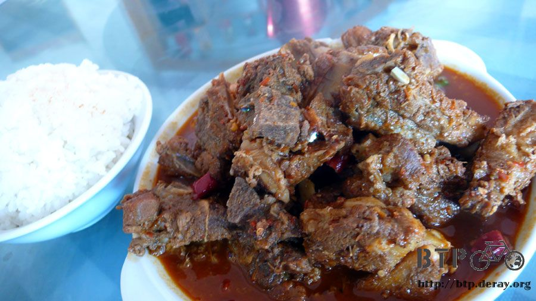
明明剛到的時候店裡就只有我一個客人，店員還無聊的在打蒼蠅，怎麼沒兩下子就陸陸續續來很多遊覽車，載來滿滿的客人。
吃飽美味的午餐之後，插著餐廳的電力，坐在店門口用電腦，整理昨天騎馬的遊記。
因為照片實在太多，昨天夜裡弄到兩點熄燈，漆黑一片了我還沒弄完，遊記只好今天中午才有時間寫。
本來想說坐在餐廳裡面太引吃飯的客人注目，所以就坐在門口，結果吃完飯的客人到門口來聊天抽菸就看到我還有小多。
哇～劈哩啪啦的問題又湧了上來，因為大家都是來參加旅行的，人手一台相機，啪擦啪擦的就拍了起來。
我想說最糟糕就是這樣了吧，闔上電腦陪著聊兩句，希望他們對我失去興趣之後會趕緊散開。
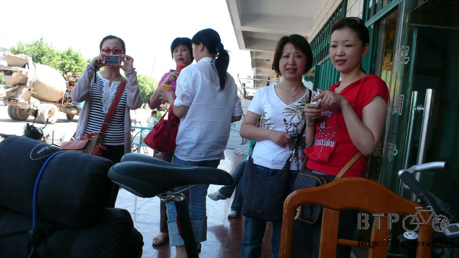
結果他們一個招呼一個，整間餐廳的人通通都跑出來，排山倒海的問題蜂擁而上，還有要求合照的、簽名的，讓我整個人很驚嚇。
合照我就傻傻的笑，簽名我還會寫上BTP的標語，同時附上網站連結，也許等他們看到其實我是台灣人之後，會換他們感到驚嚇吧。

一點半抵達餐廳，想好好寫遊記可是來吃飯和順便參觀我的遊客一波接著一波，後來老闆娘讓我躲到一間包廂裡面，才得以安靜的整理文章。
等我打開門重新出關之後，忙碌的店員們終於也休息換自己在吃飯了，跟大家分享這幾天的遊記，大家都看得津津有味。
離開餐廳已經是下午五點半，此時距離霍爾果斯剩不到三十公里，隨便騎就可以到了。
往前幾公里，有一個邊境檢查站，只是簡單的看一下身分證然後就放行，不會多嚴格的檢查。
但是我沒有身分證呀～本來想悄悄的騎過去就好了，但是很怕被從後面射殺。
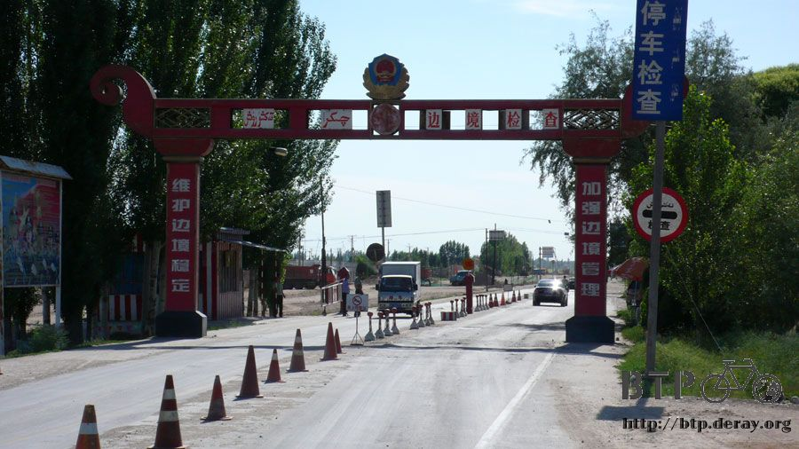
檢查的軍人一開始沒有注意到我，我還自己乖乖的停下來，問他們需要看我的證件嗎？
軍人想了一下，就說『那看一下好了～』
攜帶了兩個月的台灣護照和台胞證，首度派上用場，噹噹噹噹～拿出這兩本可以忽略存在但是又無比重要的證件。
一交到軍人的手上，他眼睛馬上為之一亮，招呼他的學弟過來。
『喂～有沒有看過台灣護照？快過來看呀！』

哇咧，兩個人就這樣參觀起我的護照來，翻著裡面好幾個國家的簽證，哈薩克、俄羅斯、波蘭、歐盟，問我想去哪裡？
因為不是中國居民，所以依規定要登記，寫在外國人的本子上面。
拿回證件小心翼翼的再藏好，剩下十幾公里，往霍爾果斯前進吧！

下坡正好結束，剩下這段路又開始爬坡，太陽好熱好熱，小腿都被曬的像有人拿燒紅的烙鐵燙我一樣。
剩下最後的一小段路時，看到加油站就進去躲了一下，買支冰棒再喝瓶果汁，讓身體降降溫度。
在這邊打聽到霍爾果斯的情報，有個開卡車的大叔說他長年開卡車，遇到太多像我這樣騎單車的旅行者。
中國有一個很有名的徒步旅行者，有一次被他遇到，他還特地停下車來和他握手，結果之後他就死在沙漠裡了。
嚥下一口口水，等等麻煩你不要跟我握手，點個頭意思到就好了。
卡車大叔說霍爾果斯不是好地方，如果我今天沒有要過境的話，根本沒必要在那邊住宿，物價貴、住宿費貴、治安也不好。
在霍爾果斯之前有一個六十二團，是軍隊駐守的城鎮，在那邊的物價比霍爾果斯便宜太多了。
這是一個很重要的情報，萬一霍爾果斯真的如大叔所說這麼樣的糟糕的話，那等等再折返回來找地方住。
往前騎半個小時，就進入了霍爾果斯，關於這個邊境之城，我在心裡已經幻想過無數種它可能的面貌。
可是實際看到的時候和我所想的還是完全不一樣。
第一：它不怎麼發達，很多東西都還在建設當中。
第二：它不如我所想的那樣有很多民族融合在這裡做生意。
第三：這裡好小呀！一條歐亞路貫穿市區，再交叉著兩條大路，這樣就是霍爾果斯的全部了。

介紹兩棟比較值得一看的建築物，霍爾果斯口岸國際商貿中心
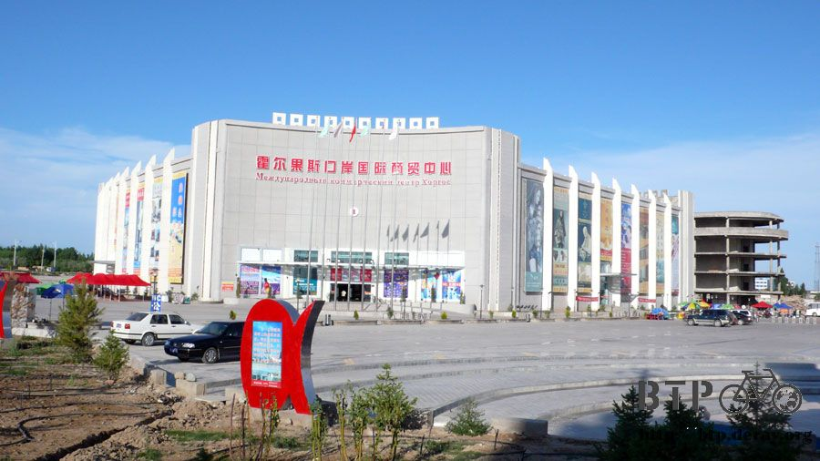
霍爾果斯的中國海關

一路直直騎，就會進入關卡，關卡的門口前面排著長長的卡車長龍，現在已經是下班時間了，關卡關閉，要通關的話得等到明天早上十點，
也就是新疆和哈薩克時間的早上八點，才開始檢查證件以及放行，這些卡車就在關卡門口排隊。
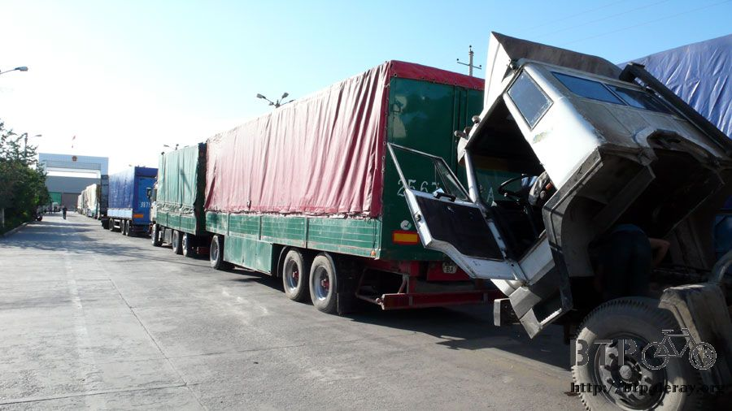
夕陽西下的正是時候，不用手擋著太陽的西曬，逆著光根本就沒辦法拍照。
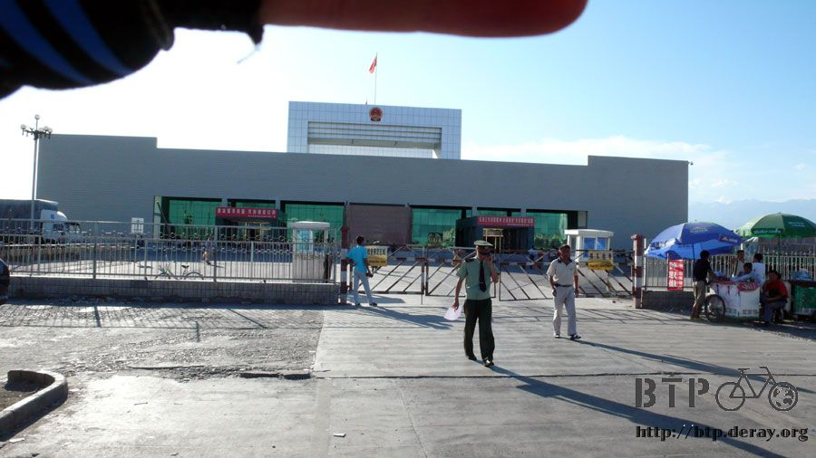
這樣佔據馬路的行為似乎是可以被接受的，各式各樣的大叔在卡車旁邊聊天。

看過關卡心裡已經有個底，接下來就準備找住的地方吧，問了五、六間旅館，價錢都很討人厭，最便宜的一晚上也要六十元，而且房間很爛。
有一個賣蔥油餅的大叔也跟我說霍爾果斯住宿跟吃飯都很貴，因為這邊是口岸，他也跟我說可以去六十二團那邊住。
然後報給我一條路，說走那邊比較近，走國道回去就太麻煩了。

沿著蔥油餅大叔說的路騎，沒有任何的告示牌指引方向，騎到路的終點之後就是盡頭，除了草和泥土之外什麼也沒有。
這條近路到底是怎麼回事，蓋得那麼大一條，可是卻不通往任何地方，回頭騎的時候碰巧看到一位也是騎自行車的大叔，
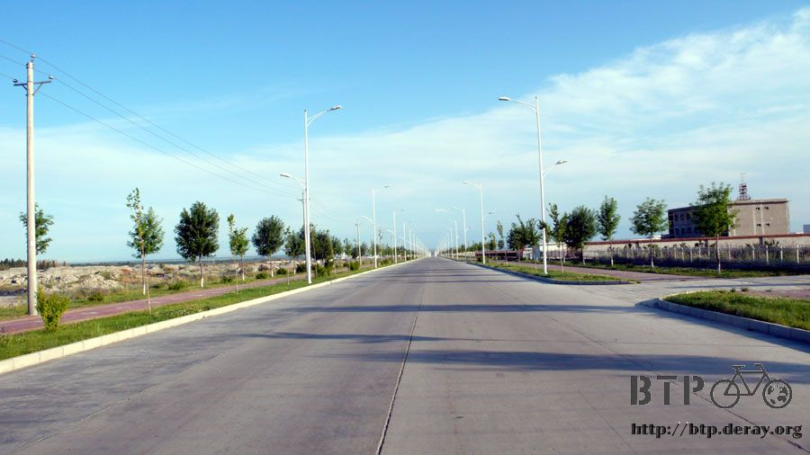
我問他六十二團該怎麼走？我要到那邊過夜。
正巧他也有事情要去那裡辦，就叫我跟著他騎，馬上就離開大馬路，轉入小道之中。

一開始看起來只是個鄉間小路，但是越跟著大叔騎路況就越離譜，穿越了整個玉米田，旁邊就是吃草的牛。
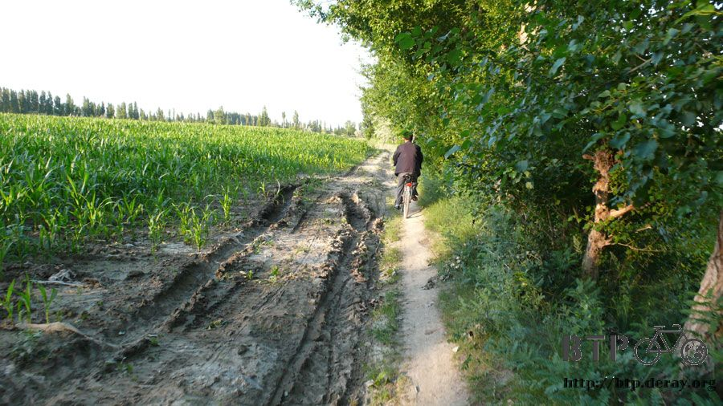
當我覺得這樣的路已經很扯的時候，接下來就騎不動了，要扛著小多過河，沒有路面，也沒有橋，只有狹窄的石板架在河上。
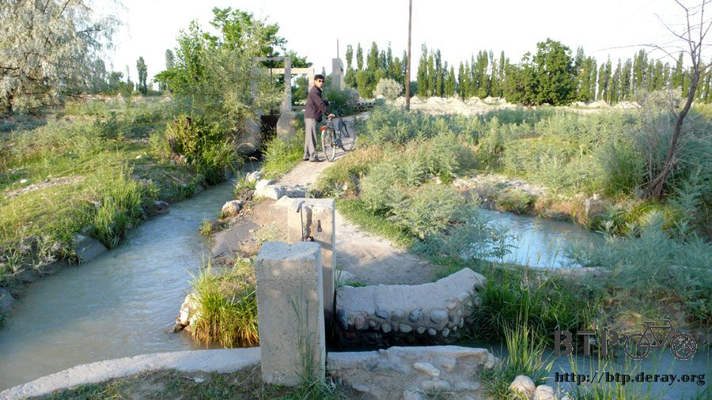
牽著小多膽顫心驚的過河，然後又是下一個石板橋，又要害怕的走，一不小心就是連人帶車掉下去啦。
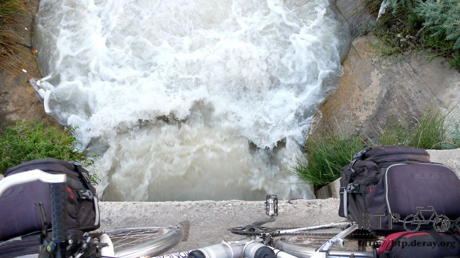
『大叔～這路也太捷徑了一點吧。』
但是也多虧了他帶我走這個小徑，我才可以從霍爾果斯騎到六十二團來，一進入城鎮之後兩旁的路樹是很漂亮的柳樹。

這裡很熱鬧，不是個破破的小鎮，該有的商店一樣不缺，包含我需要的網吧。
住宿地點在這個希望之光的旁邊一間民宿，一晚上二十元，房間很豪華，比起六十元可是破爛的霍爾果斯旅館要好太多。
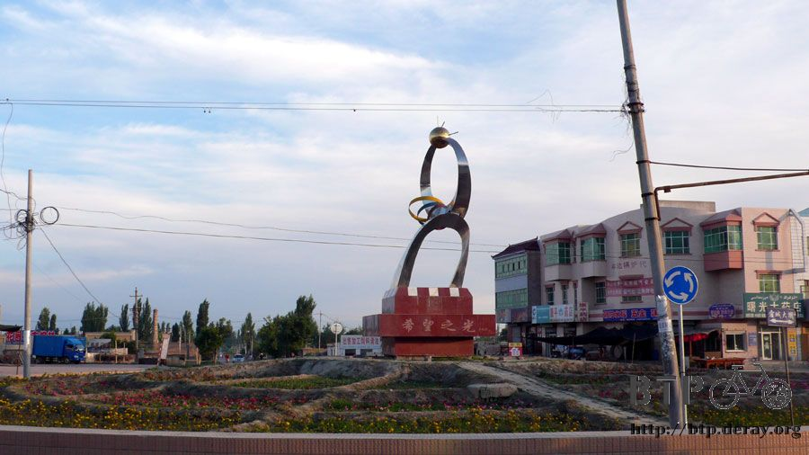
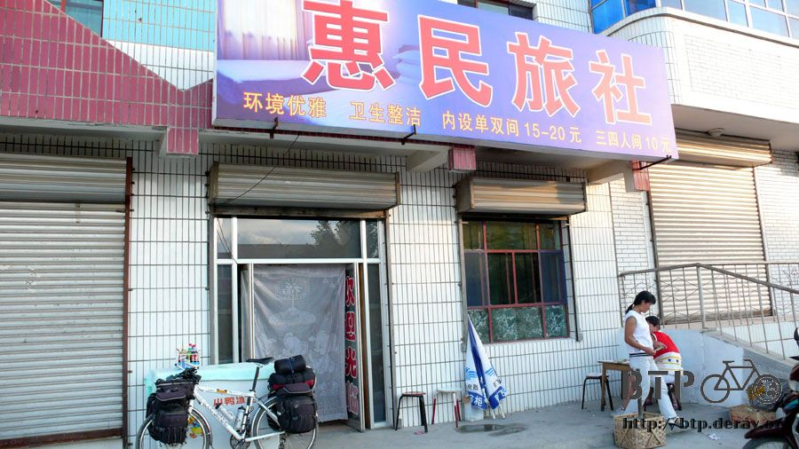
稍微殺價一下就只要五十元就可以連續住三個晚上。
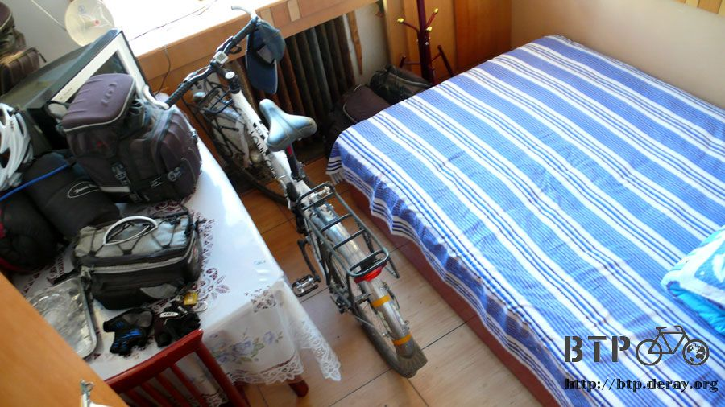
這三天可以好好的恢復精神養足體力，然後要去霍爾果斯書店找看看有沒有哈薩克的地圖，以及去銀行換錢。
出發兩個月後，中國的邊界已經踩在腳下，接下來進入哈薩克，又是旅行新的一頁，我和你一樣都拭目以待。
繼續閱讀：6.22 邊境小鎮的溫度
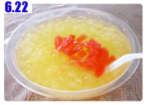
中國-人民幣－ 1：4.3 台幣
6.21 |
總計：42元 |
午餐紅燒排骨、米飯19元、冰棒0.5元、果汁2.5元、住店20元 |
|